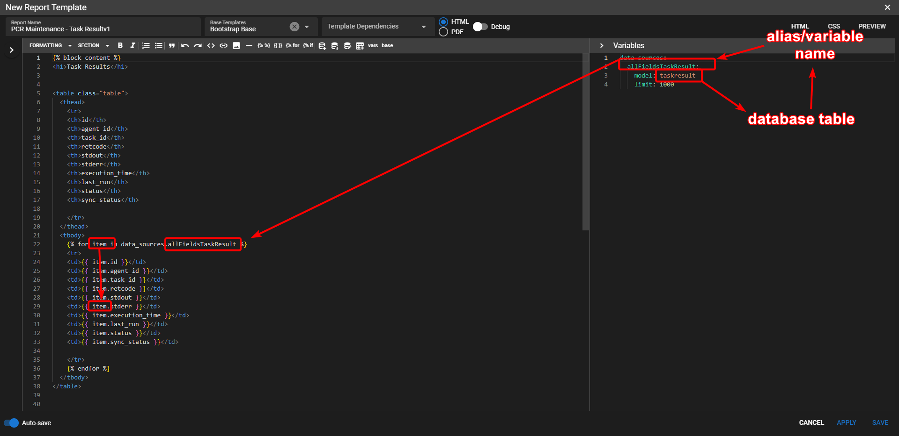

The Basics¶
This template will show case the basics of reporting and also give some examples on how to use them. The toolbar along the top has various formating options for text and some useful functions for building dynamic reports. Reports are built using the Jinja templating engine. A reference guide and be found Here.
Reporting formats¶
You can write report templates using Markdown, HTML, or Plain Text. HTML and Markdown reports will look the same regardless of choice. Templates cannot be converted between formats, but it would be easy enough to do the conversion manually between markdown and HTML
Markdown templates¶
Do note that HTML is valid in markdown and should be used when the Markdown syntax doesn't do exactly what you need. An example
would be for using the <table> tag.
Also note that the markdown is rendered to HTML anyway.
See this reference for Markdown syntax
Plain text templates¶
Plain Text templates are a great choice if you just want to generate some text without all of the formatting. This is very useful if you want a CSV export of some data.
The toolbar¶
The toolbar along the top of the editor provides some shortcuts for commonly used functions. Most of the buttons are used for text formatting, but there are some shortcuts for adding/editing data queries, base templates, and inserting charts and tables. Hovering over the button will display its function.
Variables¶
You can add in variables in the right editor pane. The variables pane can be toggled
on/off using the vars button on the toolbar. The variables are adding in yaml format
and can be referenced using {{variable_name}} in the template. The value of the variable
will be substituted when the template is rendered. If the value of the variables is nested within
an object, you can use dot notation to render the value like {{ object.variable_name }}. If there is
a space in the name you can use {{ object["variable name"] }}.

Variable analysis¶
With data sources and other dynamic sources, it can be difficult to view what the data looks like to use in report templates. With variable analysis, the query is ran and the available properties are returned. Click on the > arrow on the top left of the editor window (under the toolbar) to see the available properties from the variables section. You can then click on them to copy and you can paste them into the template.
For array values, you can click the For loop button and paste in a Jinja for loop to easily loop over the properties.
Data queries¶
Data queries are a way to save commonly used queries and use them in templates. Data queries are added under the data_sources key in the variables section. If the key doesn't exist, it will be created
Adding data queries¶
Using the Add Data Query button on the toolbar, it will open the data query editor. This editor will let you know the valid syntax of the query and supports auto-complete. If you are stumped and need to know all of the values that are supported you can press Ctrl+Space and a dropdown will show. Once you add the query, it will be auto-inserted into the template.
You can also add a data query from the Report Manager and open the Data Queries button along the top. This is the save function as using the toolbar, but it will save the query to allow it to be used in templates.
Inserting saved data queries¶
You can insert a saved data query using the Insert Data Query button on the toolbar. You just have to select the data query from the drop down and it will insert it into the template.
Editing data queries¶
You can edit data queries in the template by clicking the Edit Data Query button on the toolbar. This will list the currently added data_sources into a dropdown and allow you to edit them in the auto complete editor. Clicking save will replace the data query in the variables with the updated one.
Report output format¶
Reports can be output in either HTML, PDF, or in Plain Text format.
HTML and Markdown Template types¶
HTML and Markdown template types and be output in PDF or HTML formats. These template types don't support plain text output.
Plain Text¶
Plain text template types can be output in PDF or text. This template type doesn't support html output. Putting markdown or anything else in a plain text template will just output the same markdown. It isn't processed through the markdown library.
CSS¶
CSS can be embedded in the report template using the CSS tab on the top right on the report template editor. The CSS class can be referenced in the report template for styling.
If you are using markdown, you can add ids and classes to html elements by
using {#id_name} and {.class_name} beside the template.
This will render an h1 html tag with an id of 'id-name' {#id-name}
This will render an h1 html tag with a class of 'class-name' {.class-name}
Report assets¶
Assets can be served from your Tactical RMM instance. They will need to be uploaded to the Asset Manager first. This can be accessed from the Reporting Manager windows by clicking on the Report Assets.
Once uploaded, click on the Image button on the toolbar and select the Report Asset radio button. From there you can click on an asset and go to Insert.
Base templates¶
Base Templates allow you to use the same report structure throughout multiple reports. The base template should be a full html document enclosed in an html tag. To specify content that should be overridden in the child template, you can use Jinja blocks in the base template. See this example in the Jinja documentation.
You can add a base template from the report template editor by clicking the base button on the toolbar.
When you select a base template (using the dropdown) in a report template, the extends block will automatically be inserted. You can click on the variable analysis button (top-left arrow) to see which blocks in the base template need to be overridden yet. Clicking on the block in variable analysis will copy the text to the clipboard and will need to be copied into the template.
Template dependencies¶
Sometimes you need to provide data during a reports runtime. This could be a specific client, a date range, etc. This is achievable by setting a template dependency using the Template Dependencies dropdown on the report editor. Then default values are Client, Site, and Agent. You can type additional values that are required for the report.
In your variables and report template, you can use these dependencies by enclosing the
same of the dependency like so: {{agent.hostname}} or {{client.name}}. For custom
dependencies you can just type in {{ dependency_name }}. These are case sensitive.
Report preview¶
You can easily see what a report is going to look like by pressing the Preview button on the top right of the editor window. You can choose between an HTML or PDF output using the radio buttons.
If you have report dependencies, a dialog box will show asking you to fill in the values that should be used to generate the report.
Debug¶
if you need additional info showing the values of the variables and the rendered HTML, you can check the debug button. This will show at the bottom of the preview window.
Running a report¶
Running a report can be done from the Reporting Manager by right-clicking on the report template and either running as an HTML or PDF report. The report will open up in a separate window. If there are report dependencies, a dialog will prompt to populate the values.
You can save the URL or bookmark it to easily generate the same report without having to populate the dependencies.
If you have a Client, Site, or Agent dependency specified in the report, you can also right-click on the respective entity in Tactical RMM and go to Integrations > Run Report. You can then specify a report output type and the entity that you right-clicked on will automatically populate as a dependency.